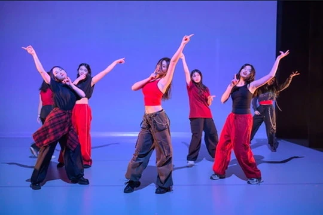
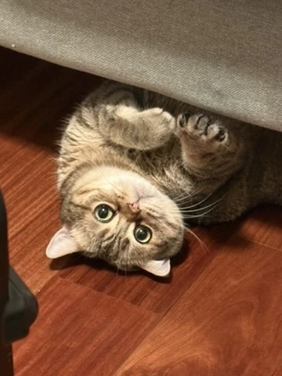
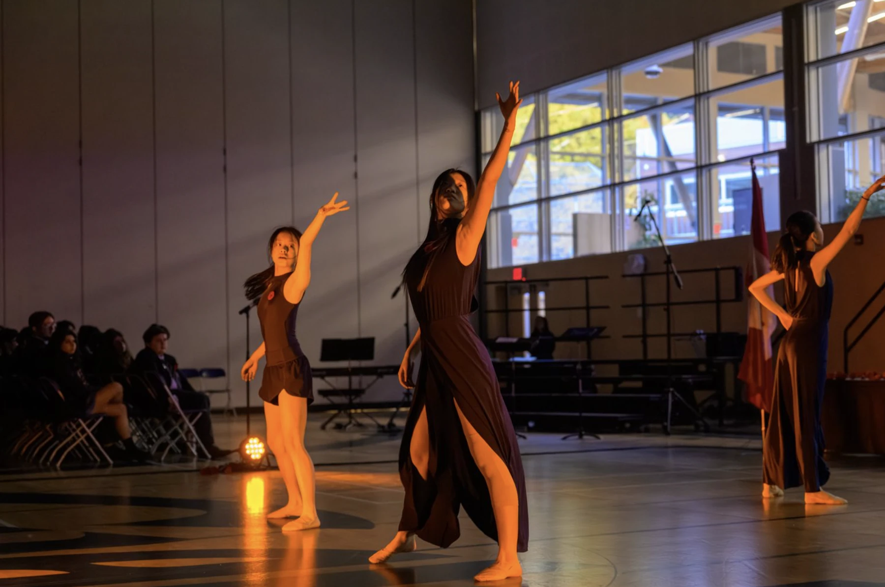
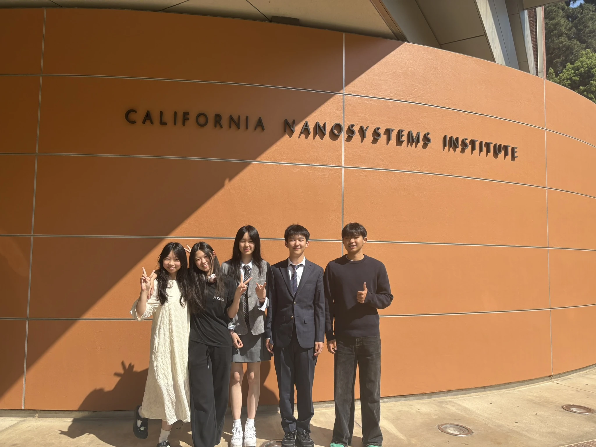
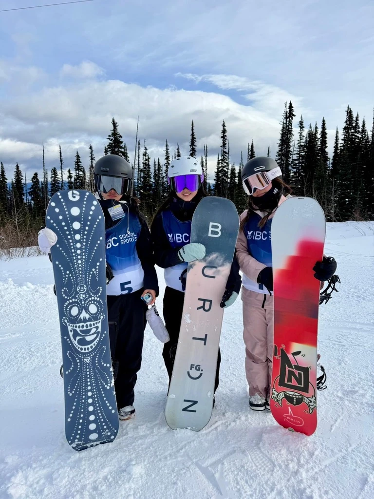
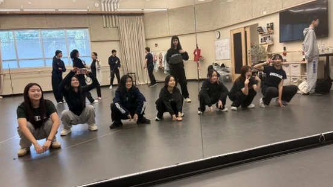
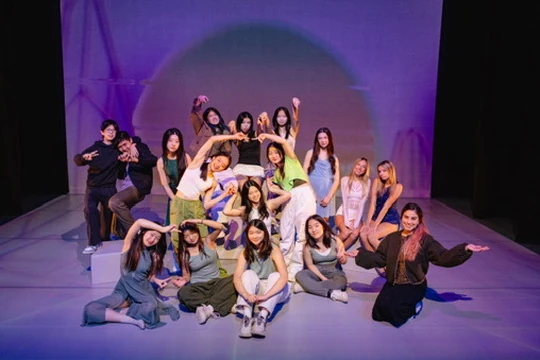
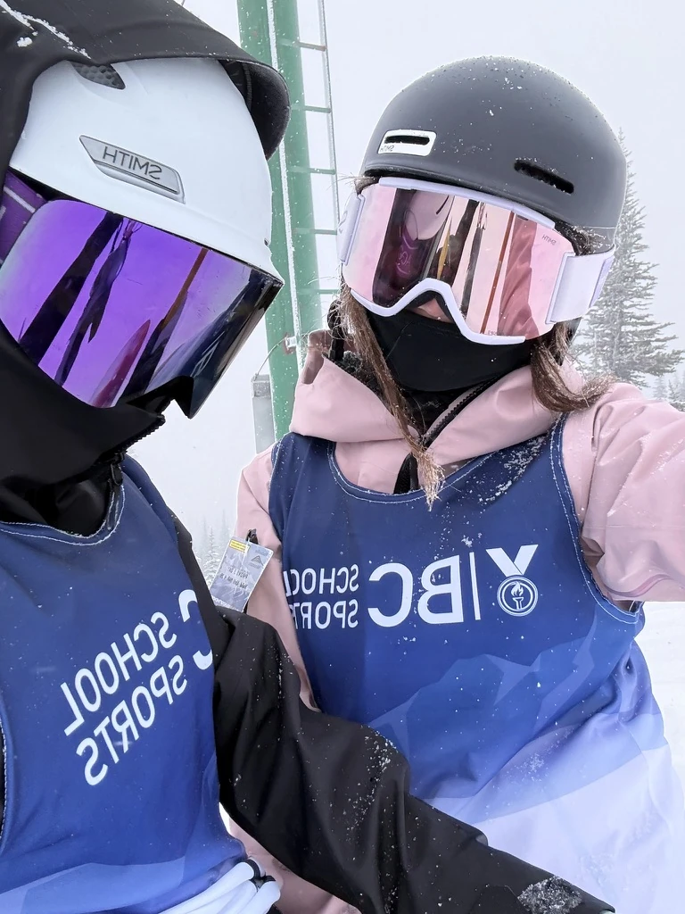
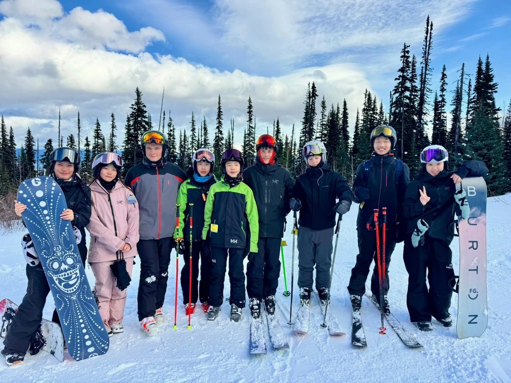

01 / 04
Where we
find our rhythm.
Bookworm, theoretical physics enthusiast, K-pop dancer, snowboarder, and a jack of all trades, master of none (and pretty happy about it).
When I'm not dancing or buried in a book, there's a good chance I'm reading about black holes, going down a random biology rabbit hole, or bothering my cat.
The love of my life. My emotional support animal. The last thread holding my sanity.


Where we
find our rhythm.

When words
aren't enough.

Always asking
one more why.

A little more
out of my element.
I founded my school's K-pop club in Grade 8.
Four years later, somewhere between teaching choreography, fixing formations, and preparing for performances, we've had our fair share of chaos, laughter, and unforgettable moments. Here are some of my favorites!




Dance has always been one of my favorite ways to express things that are difficult to put into words.
For our school's Remembrance Day assembly, I choreographed a contemporary piece to Missing You , exploring the longing and separation experienced by those leaving for war and the loved ones they left behind.
(P.S. I'm the one just left of center!)
I imagined the chairs on stage as home, a place of comfort and familiarity. As dancers leave their chairs and their partners, I wanted to capture the moment when someone has to say goodbye, not knowing when, or if, they'll see each other again.
More than anything, I wanted the choreography to show the feeling of being left behind, of missing someone who is no longer there.

At UCLA's CNSI Nanoscience Summer Program, my group worked on ChitoGel-VX, an experimental oral vaccine delivery system for tilapia.
We spent our time making materials, running experiments, and trying to figure out why things didn't always behave the way we expected. Our results left us with more questions than answers, which, strangely enough, was one of my favorite parts of the experience.
UCLA NANOSCIENCE · CHITOGEL-VX
The original write-up, preserved in full with its numbered procedure.
Streptococcosis is an important disease affecting farmed tilapia and can cause significant mortality. Streptococcus agalactiae has been identified as a major cause of streptococcosis in tilapia, with reported mortality reaching over 50% in some cases. Because tilapia are widely farmed around the world, preventing this disease is an important concern for aquaculture.
Current vaccination methods for fish include injection, immersion, and oral vaccination. Injection vaccination can require considerable labor and handling of individual fish. This can increase the time required for vaccination and may cause additional stress to the fish. ChitoGel-VX was developed as an oral vaccine intended to provide an alternative to traditional injection-based vaccination. The product is designed to deliver a vaccine through the digestive system of tilapia.
The main challenge for an oral vaccine is protecting the vaccine while it passes through the stomach. The presentation identifies gastric acid as the main obstacle in the validation experiment. Tilapia stomach conditions are acidic, with the presentation representing the stomach at approximately pH 3, while freshwater and the intestine are represented as approximately neutral at pH 7.
ChitoGel-VX uses a coating system involving chitosan and iota-carrageenan. The chitosan layer provides protection and slows the disintegration of the material. The iota-carrageenan layer contains the antibody and is intended to slow disintegration in the intestine, allowing the vaccine components to be released later in the digestive system.
The purpose of this validation experiment was therefore to determine whether the ChitoGel-VX coating could resist acidic conditions similar to those found in the tilapia stomach. Hydrochloric acid was used to simulate gastric acid. The experiment compared coated and uncoated material under acidic and water conditions to determine whether the chitosan coating provided additional protection against dissolution.
The validation experiment was designed to test one of the most important requirements of ChitoGel-VX: its ability to survive the acidic environment of the stomach before reaching the intestine. The independent variable was the presence or absence of the chitosan coating and the surrounding solution condition. The samples were tested under acidic and neutral conditions. The dependent variable was the degree to which the ChitoGel material dissolved or disintegrated during exposure.
The uncoated ChitoGel dissolved in both the acid and water. The ChitoGel coated with chitosan did not dissolve in the acid, but it did dissolve in water. This shows that the chitosan coating helped protect the ChitoGel from acidic conditions. However, the coated ChitoGel should not dissolve in water either and should dissolve in acid. Therefore, further testing is needed to improve the coating and determine why it dissolved in water.
The experiment showed that the chitosan coating was effective at protecting the ChitoGel from acidic conditions. The uncoated ChitoGel dissolved in both the acid and water, while the ChitoGel coated with chitosan dissolved only in water. This suggests that the chitosan coating provided a layer of protection against the acidic environment and could help the ChitoGel survive the conditions of the stomach.
However, the coated ChitoGel should ideally remain intact in water as well. Since it dissolved in water, the coating may not yet be strong or stable enough for the intended purpose. Further testing is needed to improve the chitosan coating and determine how to prevent the ChitoGel from dissolving too early. A successful coating should protect the vaccine as it passes through the stomach while still allowing it to eventually release in the intestine. Overall, the validation experiment supports the concept of using a protective coating for an oral tilapia vaccine and provides evidence for further development and testing of ChitoGel-VX.
Some of my favorite memories involve freezing fingers, ridiculously early mornings, and a whole lot of snow.
Between competing on my school's girls' snowboarding team and working toward my CASI Level 1 snowboard instructor certification, I've spent a pretty good amount of time on the slopes.
And somehow, my camera roll is still mostly helmet selfies.

